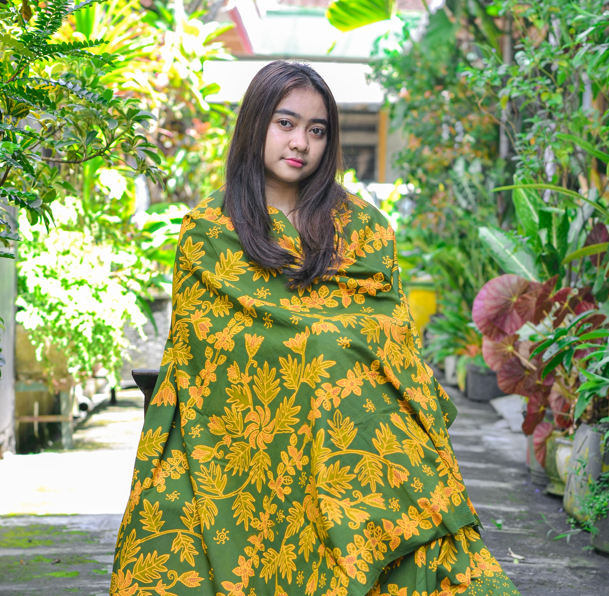

Batik Motif Daun & Buah Sukun
Filosofi motif dari buah dan daun sukun ini terinspirasi dari masyarakat lokal yang menyebut “Sukun” sebagai “Pohon Kehidupan” karena tanamana ini dapat memenuhi dan menyediakan begitu banyak kebutuhan untuk seseorang. Buah dan daun mudanya dapat dimakan, batangnya yang ringan bisa digunakan untuk membangun rumah dan kano tradisional, dan kulit kayunya digunakan untuk membuat pakaian. Beberapa ahli tanaman bahkan menyatakan bahwa “Sukun” adalah buah super untuk masa depan, yang punya potensi jadi solusi masalah kelaparan dunia.
Rp 100.000
Hubungi Kami
PRODUK LAIN DARI KAMI


Batik Motif Batik Wayang
Rp 100.000
Hubungi Kami

Kalung Kain Perca Batik
Rp 100.000
Hubungi Kami